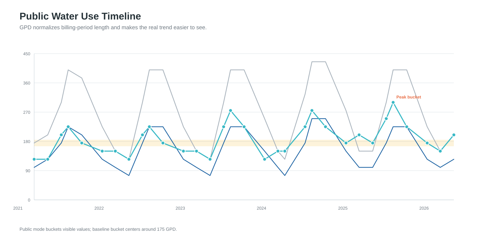
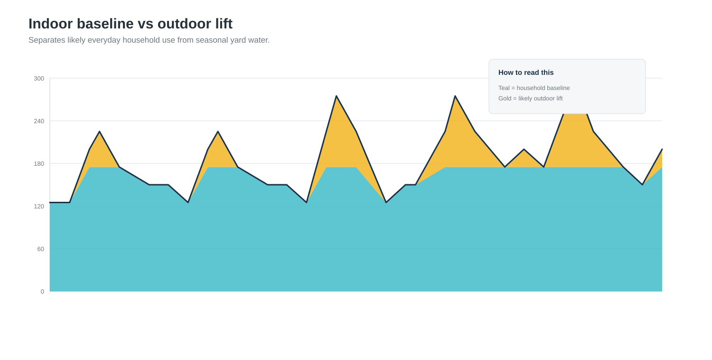
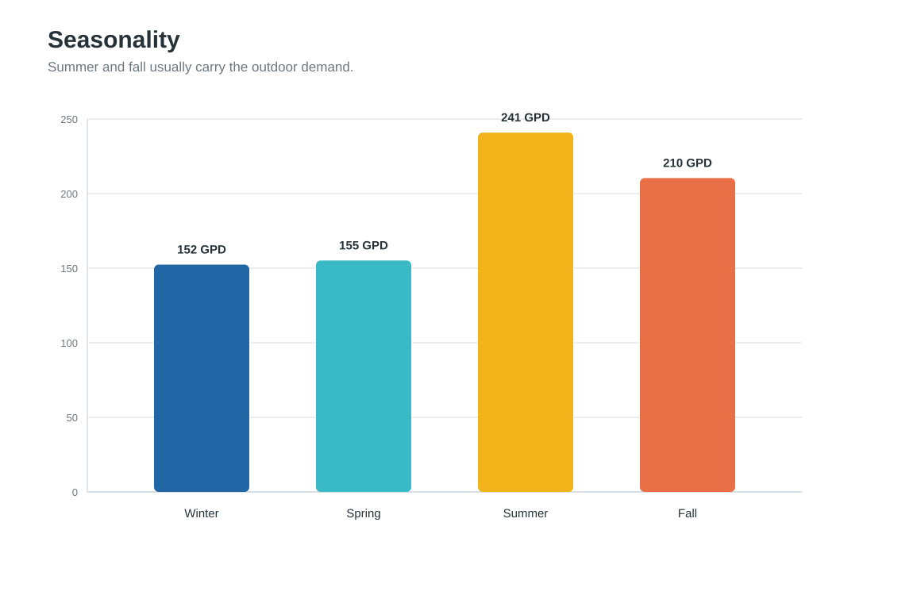
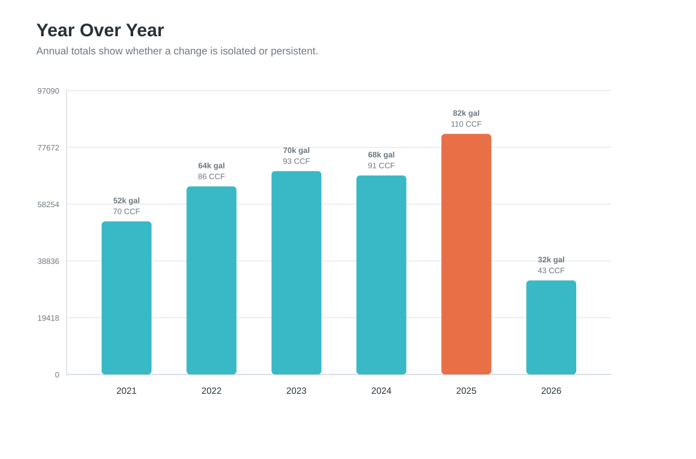
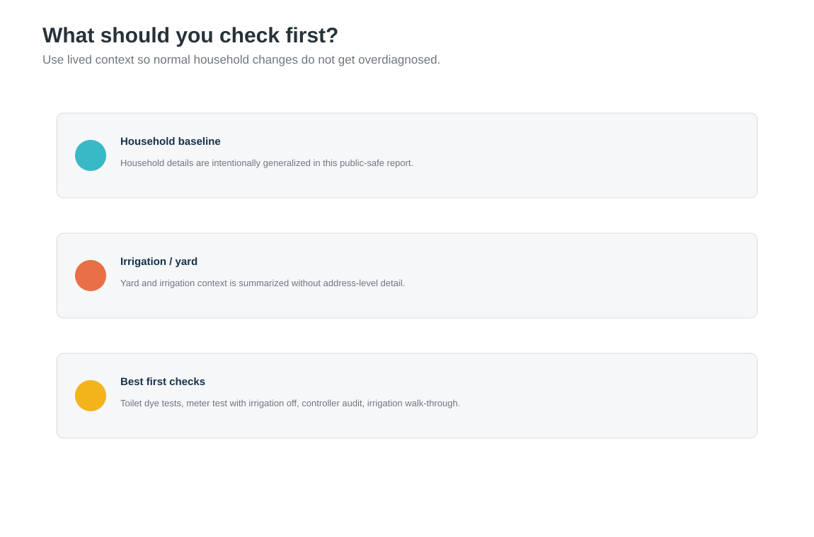

Timeline
Use GPD to see real changes independent of billing-period length.

Driver Stack
Estimate household baseline versus seasonal/outdoor lift.

Seasonality
Summer and fall usually reveal irrigation behavior.

Year Over Year
Spot persistent shifts rather than one-off bills.

Context
Blend data with household and yard reality.
